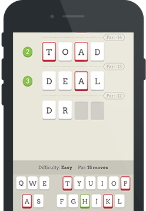

Qiktionary
Qiktionary
The Loathsome Scrabble Word finder

The Loathsome Scrabble Word finder
As a regular player of online scrabble and Words With Friends (and founder of Qiktionary – The 4-letter Word Game by Four Letter Works, I enjoy the kind of disjointed relationship with strangers that can only be cultivated in our newly-connected world. Some are true friends; some of them seem to have a prison number rather than a name; others a nickname; others a version of themselves that includes a photograph of their cat.
Whatever their names, we speak a lot. I say 'speak' in that we exchange words on a very regular basis. But like the names of my posse, the words too are disjointed, unrelated and non-sequential.
But I'm OK with this... until I sense to spectre of the Scrabble Word Finder. And then my blood starts to boil.
The Scrabble Word Finder is an invisible and sinister temptress. At its most basic, Scrabble Word Finder is a piece of software that generates plausible words based on a random selection of letters inputted into its demonic algorithm. So Scrabble Word Finder is a cheating machine. Fine, cheats lie at the heart of the digital gaming economy. I have no problem with it in that regard.
But Scrabble Word Finder is a more toxic influence than this. It subverts the whole ethos of online Scrabble and Words With Friends by creating distrust amongst us players - cheaters and non-cheaters. Last week, I landed a 7-letter word on a gentleman with whom I had played 3 or 4 games. It was an unusual word, but not implausibly so for a 50 year old man who studied Latin and has been tackling the Times cryptic crossword every day since he was 22. Suddenly 'Nice wee cheat' appeared as a message sent from my opponent. Every defensive hackle I own was raised. 'Me? Using a Scrabble Word Finder? What?' I over-reacted to the accusation shamefully and blocked my opponent from any future head-to-heads.
Of course, I have been in a similar position. An opponent has gone from words such as DUNE, QI or CAT to ZEUGMAS and I smell the work of the Scrabble Word Finder. Personally, I look at it as another level of challenge. If I can beat that Scrabble Word Finder and the opponent, then I've been lucky with my letters, for sure.
But how much better a world where a Scrabble Word Finder was banned, flagged and vilified. The Scrabble Word Finder has no place in a social gaming context because of its power to create distrust.
Join me in the online revolution to have them banned forever.
© 2016 Four Letter Works – in partnership with QI and the The QI Elves. Contact us for support.